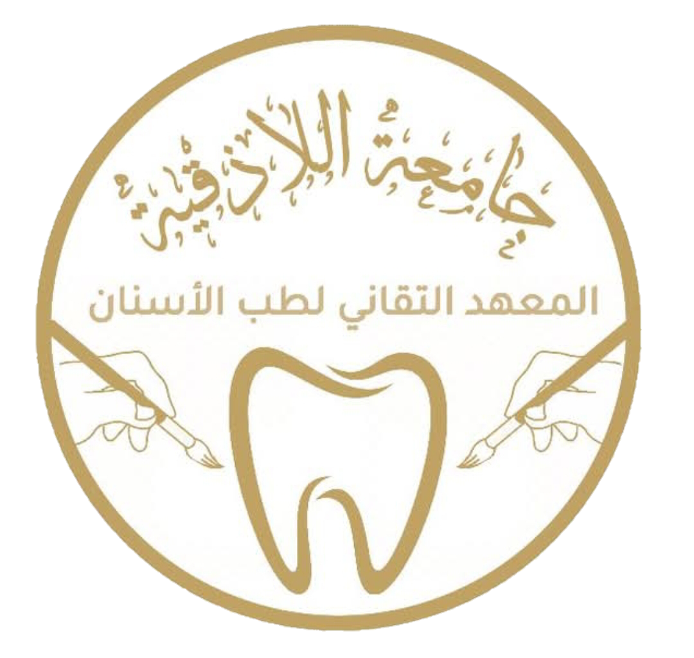

قسم مساعد طبيب الأسنان
برنامج تأهيلي عملي يركز على مهام المساعدة السريرية، التعقيم، والتعامل مع المرضى.

جامعة اللاذقية — المعهد التقاني لطب الأسنان
نقدّم برامجًا تعليمية وعملية متخصصة في طب الأسنان: تأهيل مساعدين، فنيي تعويضات، وبرامج تعزيز جودة الرعاية الفموية.
أكاديمية المعهد التقاني لطب الأسنان تهدف إلى إعداد كوادر طبية وتقنية مؤهلة تتقن مهارات الرعاية الفموية والتقنيات السنية التطبيقية، وفق معايير أكاديمية ومهنية حديثة.
برنامج تأهيلي عملي يركز على مهام المساعدة السريرية، التعقيم، والتعامل مع المرضى.
تدريب عملي لتقنيات تصنيع وتركيب التعويضات السنية ورفع الدقة الحرفية.
دورات قصيرة لتعزيز ممارسات النظافة، الوقاية، وجودة الرعاية السنية.
نماذج من الأعمال البحثية والتطبيقية التي نفّذناها مع شركائنا.
إصدار 2025 — مرجع لبناء دورات تفاعلية.
مقالات وتقارير حول قياس أثر البرامج التدريبية.
البريد الإلكتروني: admissions@dentalacademy.example
الهاتف: +963 9XX XXX XXX
العنوان: محافظة اللاذقية — جامعة اللاذقية
عنوان المصدر: المعهد التقاني لطب الأسنان
2019
معهد أكاديمي متخصص تابع لوزارة التعليم العالي في الجمهورية العربية السورية، نهدف إلى إعداد كوادر طبية وتقنية متميزة في مجال طب الأسنان من خلال تقديم برامج تعليمية متكاملة وعملية.
تأهيل مساعدي أطباء الأسنان بالمهارات الأساسية والعملية لضمان تقديم رعاية صحية فموية متكاملة.
تدريب فنيي تعويضات الأسنان على التقنيات لصناعة التعويضات السنية الدقيق
تأسس المعهد التقاني لطب الأسنان عام 2019 في جامعة اللاذقية ليكون المعهد الأحدث تأسيسا. مدير المعهد: أ.م.د باسمة أحمد يوسف
🔧 created by salem
